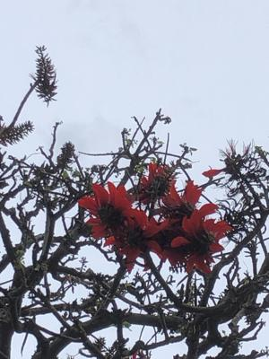
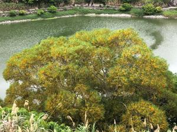

うるがいの話 ある日
最新: 老い【うるがいの話 ある日】とは 一日だけのプログです
『うるがいの話』の最新一日だけのプログで、通信料が少なく経済的だ。カニの画像をクリックすると全ての日付が載る『うるがいの話』サイトを表示します
|
|
【うるがいの話】 うるがい(ｳﾙｶﾞｲ urugai)とは、『もずくがに』の名前でとても大きくなります。 |
|---|---|
|
|
【カミマヤーの話】 猫のことを方言でマヤーといいます。カミマヤー（kamimayaa）とは、神の猫のことです。 |
|
【たながぁの音楽】 たながぁ（ﾀﾅｶﾞｰtanagaa）とは手長えびのことで、何種類かあり大きいのは車 エビぐらいになります。 |

|
【ぶながぁの話】 ぶながー(bunagaa)とは、赤い髪の毛、赤い身体、そして身長は１ｍ２０ｃｍ ぐらい、川の蟹を食べているの目撃された。場所は沖縄県国頭郡大宜味村のと ある村僕の隣近所に住んでいる爺さんから、聞いた話です。 |
|
|
【ギーマの話】 ギーマ(giima)とは、山原の里山に咲くスズランに似た、 花を付けます。実は食べられます、 気が付くと口の周りが紫になっています。 |
2022年04月28日 (木）老い
15:40
 
同級生の写真が、私のヤフー検索にドアップで映っている。『沖縄の国頭村長
が新型コロナ感染 北部３首長と一緒に東京出張』、さすがに老いが漂う。市
立図書館から、１９４６年生まれの作家（７６才）『鳥羽亮』の令和３年１１
月２日の作品を借りて読んだ。ン～、全然ダメである。全くキレがなく、同じ
事を何度も来り返している。老いかもと、でもこの歳になっても作品を出すと
は素晴らしいことではある。（暑い！、急に暑くなってきた。）、私もプログ
ラムの技能が落ちないように、夜中までプログラムを作っている。
DESKTOP-PC1\URUGAI, We have awesome remote U.S. jobs waiting for engineers like you. 4
詐欺メールである、メールアドレスが漏洩している。そく、着信拒否！。
１５時３６分 ビットコインの総資産 ￥１４、８４０↑